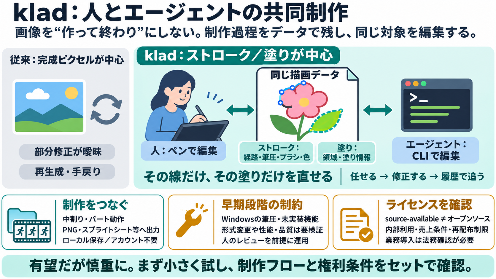

CLI-Anything/README_JA.md at main · HKUDS/CLI-Anything · GitHub
| 現在の課題 | CLI-Anythingの解決策 | --- | | 🤖 「AIは実際のツールを使えない」 | 実際のソフトウェアバックエンド（Blender、LibreOffice、FFmpeg）との直接統合 — フルプロフェッショ…

| 現在の課題 | CLI-Anythingの解決策 | --- | | 🤖 「AIは実際のツールを使えない」 | 実際のソフトウェアバックエンド（Blender、LibreOffice、FFmpeg）との直接統合 — フルプロフェッショ…
Copilot CLI: ファイルの作成と変更、コマンドの実行、マルチステップ タスクの実行を実行できるコマンドライン ツールです。 既定では、ファイル システム アクセスのスコープは、CLI が開始されたディレクトリに設定されます。 権限…
OSSとして提供され、軽量かつ高速に動作。 `AGENTS.md` によるプロジェクト設定管理で、リポジトリごとのルールを自動適用。 サンドボックス実行により、安全にコード検証やPoCが行える。 マルチモーダル入力（画像・スクリーンシ…
## 3. CLI ツール | ツール | 概要 | 特徴 | --- | Claude Code | CLIからLLMに指示、コード修正が可能・UIが洗練され、指示が出しやすい・Sonnet 4などで超強化され実質デファクト | 後…
### これらのモデルを使用すべき場合 次のことが必要な場合は、これらのモデルのいずれかをお使いください。 複数のファイルを対象にコンテキストに関する複雑な問題をデバッグします。 大規模な、または相互に接続されたコードベースをリファ…